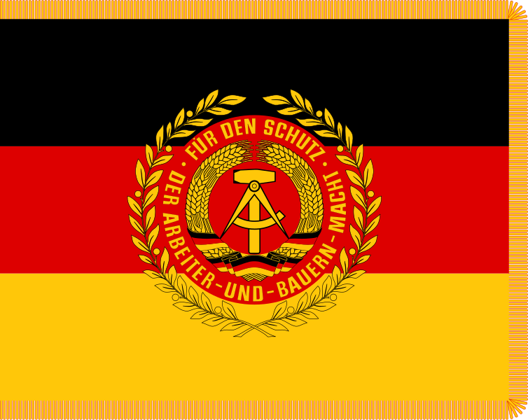

Национальная Народная армия ГДР (Volksarmee) в 1956-1990 гг.
Автор статьи: Максим Вахминцев
Опубликовано: 1 июня 2024
Опубликовано: 1 июня 2024
Статья в группе ВК Историческая империя: https://clck.ru/3M4K6r
После разгрома Германии в 1945 году на ее территории были созданы оккупационные зоны. В свете приближающейся Холодной войны не оставалось сомнений в том, что Германия станет фронтом противостояния между капитализмом и социализмом. В мае 1949 года на территории Западной Германии была создана ФРГ; в ответ коммунисты провозгласили 7 октября 1949 года в советской зоне Германскую Демократическую республику.
После разгрома Германии в 1945 году на ее территории были созданы оккупационные зоны. В свете приближающейся Холодной войны не оставалось сомнений в том, что Германия станет фронтом противостояния между капитализмом и социализмом. В мае 1949 года на территории Западной Германии была создана ФРГ; в ответ коммунисты провозгласили 7 октября 1949 года в советской зоне Германскую Демократическую республику.
Если изначально ее обороной занимались подразделения Народной милиции, основанной в октябре 1948 года, то после вступления Западной Германии в НАТО и создания бундесвера в 1955 году ГДР создала свои вооруженные силы – Национальную Народную армию и Фольксмарине. Что в ФРГ, что в ГДР перевооружение вызвало острые дискуссии среди граждан – многие из них, до сих пор имея тяжелые воспоминания о проигранной Германией войне, не поддерживали милитаризацию своих стран.
Официально Министерство обороны ГДР, управления внутренних округов ННА и штабы подразделений начали функционировать 1 марта 1956 года. Этот день был провозглашен Советом министров «Днем Национальной Народной армии».
К 1957 году были созданы командования военных округов в Лейпциге и Нойбранденбурге, которые в 1972 году переподчинили Командованию сухопутных войск, отвечавшему за их боевую подготовку и развертывание в военное время. Войска Восточной Германии неоднократно участвовали в совместных военных учениях с Советской армией и армиями других членов Варшавского блока.
Высшим учебным заведением для офицеров ННА была Военная академия имени Фридриха Энгельса, открытая в 1959 году. Изначально руководство ГДР и Советского Союза привлекало к процессу создания восточногерманской армии бывших генералов и офицеров вермахта (в частности, фельдмаршала Фридриха Паулюса, полковника Вильгельма Адама, генералов Винценца Мюллера, Арно фон Ленски – создателя бронетанковых войск ГДР - и других).
На момент 1958 года около 23% представителей офицерского корпуса ННА были бывшими военнослужащими вермахта, многие из них сражались на Восточном фронте. Однако уже к 1973 году около 90% офицеров происходили из рабочих и крестьянских семей.
Официально Министерство обороны ГДР, управления внутренних округов ННА и штабы подразделений начали функционировать 1 марта 1956 года. Этот день был провозглашен Советом министров «Днем Национальной Народной армии».
К 1957 году были созданы командования военных округов в Лейпциге и Нойбранденбурге, которые в 1972 году переподчинили Командованию сухопутных войск, отвечавшему за их боевую подготовку и развертывание в военное время. Войска Восточной Германии неоднократно участвовали в совместных военных учениях с Советской армией и армиями других членов Варшавского блока.
Высшим учебным заведением для офицеров ННА была Военная академия имени Фридриха Энгельса, открытая в 1959 году. Изначально руководство ГДР и Советского Союза привлекало к процессу создания восточногерманской армии бывших генералов и офицеров вермахта (в частности, фельдмаршала Фридриха Паулюса, полковника Вильгельма Адама, генералов Винценца Мюллера, Арно фон Ленски – создателя бронетанковых войск ГДР - и других).
На момент 1958 года около 23% представителей офицерского корпуса ННА были бывшими военнослужащими вермахта, многие из них сражались на Восточном фронте. Однако уже к 1973 году около 90% офицеров происходили из рабочих и крестьянских семей.
{kind=link}
{kind=link}
Наивысшими учебными заведениями для офицеров ННА являлись военная академия Фридриха Энгельса, академия Эрнста Тельмана, высшая школа для офицеров Фольксмарине в Штральзунде и военно-политическая школа имени Вильгельма Пика. Обучение в них длилось 3-4 года, в зависимости от специализации будущих выпускников.
С 1971 года выпускники офицерских школ получали профессиональные звания «инженера» или «экономиста высшего образования». Спортивные специалисты проходили подготовку в Лейпцигском университете. Нередко курсантов отправлял в советские военные академии – множество генералов ННА являлись выпускниками учебных заведений СССР. Подобно армиям других стран Варшавского блока, ННА участвовала в т. н. «социалистических соревнованиях».

С 1971 года выпускники офицерских школ получали профессиональные звания «инженера» или «экономиста высшего образования». Спортивные специалисты проходили подготовку в Лейпцигском университете. Нередко курсантов отправлял в советские военные академии – множество генералов ННА являлись выпускниками учебных заведений СССР. Подобно армиям других стран Варшавского блока, ННА участвовала в т. н. «социалистических соревнованиях».
.svg){kind=link}
Знамя Национальной Народной армии ГДР.
В Национальной Народной армии, в отличие от бундесвера, действовало равноправие в военной службе – женщины могли служить добровольно и выбирать свою специальность. Их оклады были сопоставимы с окладами мужчин.
Большая часть женщин находилась на медицинской службе, но в 1984 году для них появилась возможность проходить офицерскую подготовку. В армии ГДР служило около 2000 женщин. Ни одна из них не получила генеральского звания.
В 1990 году ННА была распущена, а все женщины уволены с военной службы, поскольку для них в бундесвере все еще действовал запрет на военную службу. Исключением стали только медики, которые перешли на службу в армию единой Германии.
Воинские традиции ННА восходили ко временам Крестьянской войны в Германии XVI столетия и Освободительной войны против Наполеона 1813-1814 годов. Доктрина вооруженных сил отрицала какую-либо связь с прусско-германскими традициями, что отражалось также на характере и качестве подготовки офицеров. Немецкие авторы даже пишут, что советские военные удивлялись тому, почему их восточногерманские товарищи не изучают труды Гудериана, Роммеля и других выдающихся теоретиков и стратегов вермахта.
Униформа солдат ННА не случайно напоминает униформу вермахта – руководители ГДР посчитали, что она должна подчеркивать «немецкий национальный характер» вооруженных сил. Вальтер Ульбрихт – генеральный секретарь ЦК СЕПГ – и Вилли Штоф, занимавший пост министра национальной обороны ГДР, считали, что военная форма ННА не должна напоминать униформу бундесвера, который испытал на заре своего создания сильное идеологическое влияние со стороны западных союзников и отказался от многих военных традиций Пруссии и Германии. Знаки различия, парадный шаг и многие другие атрибуты старой немецкой армии также сохранились, с некоторыми изменениями, в армии и флоте ГДР.
Большая часть женщин находилась на медицинской службе, но в 1984 году для них появилась возможность проходить офицерскую подготовку. В армии ГДР служило около 2000 женщин. Ни одна из них не получила генеральского звания.
В 1990 году ННА была распущена, а все женщины уволены с военной службы, поскольку для них в бундесвере все еще действовал запрет на военную службу. Исключением стали только медики, которые перешли на службу в армию единой Германии.
Воинские традиции ННА восходили ко временам Крестьянской войны в Германии XVI столетия и Освободительной войны против Наполеона 1813-1814 годов. Доктрина вооруженных сил отрицала какую-либо связь с прусско-германскими традициями, что отражалось также на характере и качестве подготовки офицеров. Немецкие авторы даже пишут, что советские военные удивлялись тому, почему их восточногерманские товарищи не изучают труды Гудериана, Роммеля и других выдающихся теоретиков и стратегов вермахта.
Униформа солдат ННА не случайно напоминает униформу вермахта – руководители ГДР посчитали, что она должна подчеркивать «немецкий национальный характер» вооруженных сил. Вальтер Ульбрихт – генеральный секретарь ЦК СЕПГ – и Вилли Штоф, занимавший пост министра национальной обороны ГДР, считали, что военная форма ННА не должна напоминать униформу бундесвера, который испытал на заре своего создания сильное идеологическое влияние со стороны западных союзников и отказался от многих военных традиций Пруссии и Германии. Знаки различия, парадный шаг и многие другие атрибуты старой немецкой армии также сохранились, с некоторыми изменениями, в армии и флоте ГДР.
{kind=link}
{kind=link}
При просмотре парадов ННА можно увидеть характерное сходство униформы войск Восточной Германии с униформой вермахта. Парадная форма офицеров состояла из светло-серых пиджака и штанов, белой рубашки, темно-серого галстука, а также кинжала или сабель. Зимняя форма включала в себя шинель, шарф и перчатки.
Высокопоставленные офицеры надевали на торжественные церемонии белые кители. Женщины носили жакеты, юбки или брюки, блузки, фуражки, ботинки или туфли в зависимости от погоды. Помимо этого, каждый из родов войск имел дополнительные, уникальные атрибуты униформы. Форма гвардейских полков практически не отличалась от таковой у ННА.
Высокопоставленные офицеры надевали на торжественные церемонии белые кители. Женщины носили жакеты, юбки или брюки, блузки, фуражки, ботинки или туфли в зависимости от погоды. Помимо этого, каждый из родов войск имел дополнительные, уникальные атрибуты униформы. Форма гвардейских полков практически не отличалась от таковой у ННА.
{kind=link}
В первые годы своего существования Национальная Народная армия была добровольческой, ее части не занимали Восточный Берлин – столицу республики. Но после возведения Берлинской стены и ограничения свободы выезда из города солдаты ННА и пограничники стали более пристально следить за попытками восточных немцев пересечь Стену, ставшую частью государственной границы ГДР.
Вооруженные силы республики, несмотря на свою малочисленность, быстро стали одними из самых боеспособных в Европе. Своими ядерными зарядами ННА не располагала, но имела средства их доставки; применение ядерного оружия на германском направлении было центральным элементом стратегии ОВД и отрабатывалось на штабных учениях 1989 года.
Вместе с тем Восточная Германия не всегда получала современное вооружение от Советского Союза, а небольшая территория ГДР не позволяла развернуть более масштабное военное производство. Национальной Народной армии приходилось долго ждать получения новых образцов военной техники, но к моменту их доставки в ГДР те уже считались морально устаревшими среди членов Варшавского блока.
Что касается восточногерманской Фольксмарине, то она считалась одним из сильнейших флотов стран соцлагеря. Однако из-за особенностей гидрографии Балтийского моря она не располагала крупными боевыми суднами и подводными лодками. По этой причине флот ГДР мог выполнять только оборонительные функции, такие как береговая охрана и выброска десантов.
{kind=link}
Военная техника на параде в честь 39-й годовщины основания ГДР 7 октября 1988 г.
Национальная народная армия и Бундесвер являлись одними из самых боеспособных армий Варшавского блока и НАТО соответственно. ННА полагалась на качество своего офицерского состава, большая часть представителей которого в годы Второй мировой войны сражалась на Восточном фронте. В Восточной Германии находилась почти полумиллионная Группа советских войск, готовая при начале военных действий прийти на помощь своим немецким товарищам.
Бундесвер также создавался с привлечением высших генералов вермахта в качестве консультантов. Западная Германия имела развитую промышленность и могла производить собственное вооружение, в то время как ГДР получала почти всю военную технику из Советского Союза, притом с большим запозданием. Фактически, ни одна из армий не превосходила друг друга по военной мощи. Паритет сил Бундесвера и ННА, а также контингентов НАТО и ГСВГ во многом поддерживал мирное сосуществование Западной и Восточной Германии и предотвращал риск начала новой войны в Европе.
Бундесвер также создавался с привлечением высших генералов вермахта в качестве консультантов. Западная Германия имела развитую промышленность и могла производить собственное вооружение, в то время как ГДР получала почти всю военную технику из Советского Союза, притом с большим запозданием. Фактически, ни одна из армий не превосходила друг друга по военной мощи. Паритет сил Бундесвера и ННА, а также контингентов НАТО и ГСВГ во многом поддерживал мирное сосуществование Западной и Восточной Германии и предотвращал риск начала новой войны в Европе.
{kind=link}
Национальная Народная армия, равно как и бундесвер, не принимала участия в полномасштабных военных действиях. Однако, будучи одной из самых боеспособных армий Варшавского блока, она не могла полностью оставаться в стороне от бушевавших в то время вооруженных конфликтов.
Войска Восточной Германии участвовали в вводе армий Варшавского договора в Чехословакию в 1968 году. Полноценное боевое развертывание, которое стало бы первым со времен окончания Второй мировой войны, было невозможным по причине протеста со стороны чехов и других европейских государств.
Советники ННА находились на Кубе, в странах Африки и Ближнего Востока, где левые политические силы боролись за власть. Восточная Германия готовилась ввести свои войска в Польшу, когда возникла угроза крушения в ней коммунистического строя. Последний раз ННА была приведена в боевую готовность в 1989 году, когда в ГДР начались протесты, приведшие в итоге к концу республики.
Войска Восточной Германии участвовали в вводе армий Варшавского договора в Чехословакию в 1968 году. Полноценное боевое развертывание, которое стало бы первым со времен окончания Второй мировой войны, было невозможным по причине протеста со стороны чехов и других европейских государств.
Советники ННА находились на Кубе, в странах Африки и Ближнего Востока, где левые политические силы боролись за власть. Восточная Германия готовилась ввести свои войска в Польшу, когда возникла угроза крушения в ней коммунистического строя. Последний раз ННА была приведена в боевую готовность в 1989 году, когда в ГДР начались протесты, приведшие в итоге к концу республики.
Государственными праздниками, посвященными вооруженным силам ГДР, являлись 1 марта, 9 мая и 7 октября. 1 марта праздновался день Национальной Народной армии, 9 мая День освобождения Германии от гитлеровского фашизма, а 7 октября отмечали годовщину образования ГДР.
Наиболее крупные военные парады проходили 7 октября, с привлечением лучших подразделений ННА, военного оркестра и боевой техники, большая часть которой была советского производства. На парадах присутствовали руководители ГДР и лидеры социалистических стран, в том числе союзниц Восточной Германии по Варшавскому блоку.
13 августа 1986 года состоялся военный парад в честь 25-летия возведения Берлинской стены, которая именовалась пропагандой ГДР «антифашистским валом». 7 октября 1989 года состоялся военный парад в честь 40-летней годовщины основания ГДР. Он стал последним парадом в истории Национальной Народной армии, которая была ликвидирована год спустя.
Парадом, проходившим на Карл-Маркс Аллее, командовал генерал-полковник Хорст Штехбарт. В качестве почетных гостей присутствовали все главы социалистических стран, в том числе президент СССР Михаил Горбачев.
После исполнения гимна ГДР парадным маршем прошли курсанты военных академий имени Фридриха Энгельса, Розы Люксембург, Карла Либкнехта и Франца Меринга. Далее проследовали бойцы авиаполка «Вилли Зингер», пограничных войск, танкового полка «Юлиан Мархлевски», Объединенного военного оркестра и других подразделений.
{kind=link}
{kind=link}
После объединения Германии личный состав ННА был, в большинстве своем, уволен с военной службы, а боевая техника была распродана. Аналогичная участь постигла и флот ГДР, чьи корабли в свою собственность получили 8 государств. 2 октября 1990 года министр обороны ГДР Райнер Эппельманн уволил со службы генералов и офицеров Национальной Народной армии, а также освободил военнослужащих от данной ими присяги.
Офицеры бывшей Национальной Народной армии и Фольксмарине не получили признания своих воинских званий со стороны бундесвера и принимались в состав последнего только с понижением звания; их служба даже не была засчитана в качестве гражданского трудового стажа.
В сентябре того же 1990 года 280 офицеров Национальной Народной армии было принято в Школу офицеров ВВС в Фюрстенфельдбруке, где те проходили подготовку к службе в Люфтваффе ФРГ. На территории бывшей ГДР было создано Восточное командование бундесвера, которое занималось ликвидацией ННА.
Офицеры бывшей Национальной Народной армии и Фольксмарине не получили признания своих воинских званий со стороны бундесвера и принимались в состав последнего только с понижением звания; их служба даже не была засчитана в качестве гражданского трудового стажа.
В сентябре того же 1990 года 280 офицеров Национальной Народной армии было принято в Школу офицеров ВВС в Фюрстенфельдбруке, где те проходили подготовку к службе в Люфтваффе ФРГ. На территории бывшей ГДР было создано Восточное командование бундесвера, которое занималось ликвидацией ННА.
{kind=link}
Митинг солдат ННА ГДР 3 января 1990 г. с требованием сокращения срока военной службы до 12 месяцев.
Главной причиной того, что Национальная Народная армия не вошла в состав бундесвера, стало то, что Германия в октябре 1990 года обладала полумиллионной армией и большим флотом, который не имела нужды использовать из-за отсутствия какой-либо военной угрозы. К тому же союзники ФРГ по блоку НАТО были обеспокоены столь быстрым ростом германской военной мощи.
Наконец, флот ГДР не был способен выполнять боевые задачи, стоявшие перед вооруженными силами ФРГ как члена блока НАТО – вследствие этого ни один боевой корабль Фольксмарине не вошел в состав германского флота. Не стоит также забывать и о политическом факторе: руководство бывшей Западной Германии не доверяло кадровому костяку Национальной Народной армии и Фольксмарине, многие представители которых имели ту или иную связь с коммунистами и состояли до этого в СЕПГ.
Сегодня интересы бывших членов ННА и Народного флота отстаивают ветеранские организации, добивающиеся от властей Германии уравнения пенсий восточногерманских военнослужащих с пенсиями ветеранов бундесвера. Правые политики стремятся запретить ветеранам ГДР даже ношение военной формы, но немецкие власти настаивают на том, что вооруженные силы Восточной Германии не являются преступными организациями и потому символика ГДР, ее военная форма и другие атрибуты государственности подвергать запретам неправомерно.
Наконец, флот ГДР не был способен выполнять боевые задачи, стоявшие перед вооруженными силами ФРГ как члена блока НАТО – вследствие этого ни один боевой корабль Фольксмарине не вошел в состав германского флота. Не стоит также забывать и о политическом факторе: руководство бывшей Западной Германии не доверяло кадровому костяку Национальной Народной армии и Фольксмарине, многие представители которых имели ту или иную связь с коммунистами и состояли до этого в СЕПГ.
Сегодня интересы бывших членов ННА и Народного флота отстаивают ветеранские организации, добивающиеся от властей Германии уравнения пенсий восточногерманских военнослужащих с пенсиями ветеранов бундесвера. Правые политики стремятся запретить ветеранам ГДР даже ношение военной формы, но немецкие власти настаивают на том, что вооруженные силы Восточной Германии не являются преступными организациями и потому символика ГДР, ее военная форма и другие атрибуты государственности подвергать запретам неправомерно.